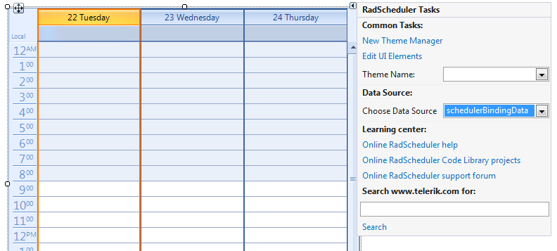
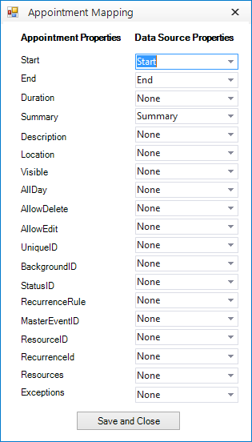
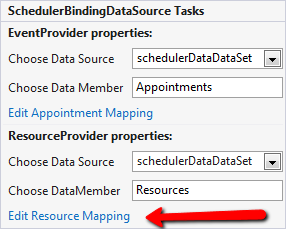
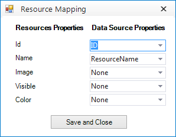

Codeless data binding
| RELATED VIDEOS | |
| [Codeless Data Binding with RadScheduler for WinForms](http://tv.telerik.com/winforms/radscheduler/codeless-data-binding-with-radscheduler-winforms) In this video, you will learn how to use the SchedulerBindingDataSource with the RadScheduler for WinForms to quickly and codelessly data bind a RadScheduler. You will also be introduced to the RadSchedulerNavigator, a simple control that makes it easy for users navigate a RadScheduler. (Runtime: 07:04) |  |
| [Introduction to RadScheduler for WinForms](http://tv.telerik.com/winforms/radscheduler/introduction-radscheduler-winforms) In this webinar, Telerik Developer Support Specialist Robert Shoemate will introduce RadScheduler and demonstrate how to utilize its powerful feature set in your own applications. By attending this webinar, you will learn about features such as codeless data binding, adding custom fields, and UI customization. (Runtime: 55:58) |  |
This tutorial will show you how to bind RadScheduler from the Visual Studio design time surface, by only using the RadScheduler
design-time support, and without writing any code. The tutorial uses the data base which comes with the installation of Telerik UI for WinForms.
Open Visual Studio and start a new Windows Forms project. Open the form, created by the project.
Drag a RadScheduler from the toolbox to your form.
Drag a SchedulerBindingDataSource from the toolbox to your form.
Select RadScheduler and open its ActionList (smart tag). In it, there is a DataSource property, which is used to specify
the SchedulerBindingDataSource component which will be used as a data source in RadScheduler. Select the instance of
the SchedulerBindingDataSource that we just added and close the smart tag:
Open the SchedulerBindingDataSource smart tag. It shows two types of provider properties, which can be used for setting
the data sources for the Appointments (EventProvider) and the Resources (ResourceProvider):

Set the Appointments and the Resources data sources. To do that, in the Properties window,
open the EventProvider property. Drop down the DataSource sub-property list and select
Add Project DataSource... This step will display the Data Source Configuration Wizard dialog.

In the "Choose a Data Source Type" page of the wizard, select the Database type and click the Next button to continue.
In the "Choose a Data Connection" page of the wizard, add a connection to the SchedulerData.mdf file supplied with Telerik UI for WinForms distribution.
Click the New Connection... button to display the Add Connection dialog.
Click the Change button and select the Access Database File option.
Set the Database File Name to the Schedulerdata.mdb file located in the Telerik UI for WinForms installation directory under \Examples\DataSources.
Click OK to close the Add Connection dialog.
Back in the "Choose a Data Connection" page of the wizard, click the Next button to continue.
A dialog will pop-up to ask where the file should be located. Choose No to leave the file located in the \Examples\DataSources directory.
In the "Save the Connection String in the Application Configuration File" click the Next button to continue.
In the "Choose Your Database Objects" page of the wizard, select the "Tables" checkbox to automatically select the Appointments, Resources and AppointmentsResources tables.
Click Finish to complete the wizard and close the dialog. This step will create a DataSet component and add it to the
component tray below the form designer.Then you need to edit the mappings between the objects used in RadScheduler and your data source objects. Open the
SchedulerBindingDataSource ActionList and specify the DataSource for both
the EventProvider and ResourceProvider to the binding source.While still in the SchedulerBindingDataSource ActionList, set the DataMember properties for both the EventProvider and ResourceProvider to the respective tables.
The EventProvider takes care of the data, related to the Appointments (Events) and has the following properties:
Data Source, which should be a DataSet object;
Data Member, which usually is bound to Appointments (Appointments is the name of the data table in the Data set)
Edit Appointment Mapping (see #16 below)
The ResourceProvider takes care of the data, related to Resources and has the following properties:
Data Source, which should be a DataSet object;
Data Member which usually is bound to Resources (Resources is the name of the data table in the Data set)
Edit Resource Mapping (see #17 below)In our case we should set the DataMember properties for both the EventProvider and
ResourceProvider to Appointments and Resources respectively:

-
While still in the SchedulerBindingDataSource ActionList, click on the Edit Appointment Mapping link.

This will invoke the *Appointment Mapping Dialog* which provides you with an easy and intuitive UI for mapping __Appointment__ properties with __DataSource__ properties. Map all of the properties with their respective counterpart, whereas: UniqueID is the ID of your appointments
Resources is a relation in the dataset, in this case AppointmentsAppointmentsResources
Exceptions is a self-relation in the dataset, in this case __AppointmentsAppointments__At the end the Appointment Mapping Dialog should look like the following screenshot. Save and Close the dialog when done:
By using the SchedulerBindingDataSource ActionList, click on the Edit Resource Mapping link to edit
the ResourceMappingInfo:
Select the ID and ResourceName for the respective properties and close the dialog:
Fill the data tables in the data set:
__[C#] __
AppointmentsTableAdapter appointmentsAdapter = new AppointmentsTableAdapter();
appointmentsAdapter.Fill(this.schedulerDataDataSet.Appointments);
ResourcesTableAdapter resourcesAdapter = new ResourcesTableAdapter();
resourcesAdapter.Fill(this.schedulerDataDataSet.Resources);
AppointmentsResourcesTableAdapter appointmentsResourcesAdapter = new AppointmentsResourcesTableAdapter();
appointmentsResourcesAdapter.Fill(this.schedulerDataDataSet.AppointmentsResources);
__[VB.NET] __
Dim appointmentsAdapter As New AppointmentsTableAdapter()
appointmentsAdapter.Fill(Me.SchedulerDataDataSet.Appointments)
Dim resourcesAdapter As New ResourcesTableAdapter()
resourcesAdapter.Fill(Me.SchedulerDataDataSet.Resources)
Dim appointmentsResourcesAdapter As New AppointmentsResourcesTableAdapter()
appointmentsResourcesAdapter.Fill(Me.SchedulerDataDataSet.AppointmentsResources)
- Use the Rebind method of the SchedulerBindingDataSource object if the dataset is filled after applying the event provider data source:
__[C#] __
schedulerBindingDataSource1.Rebind();
__[VB.NET] __
SchedulerBindingDataSource1.Rebind()
- Run the project.